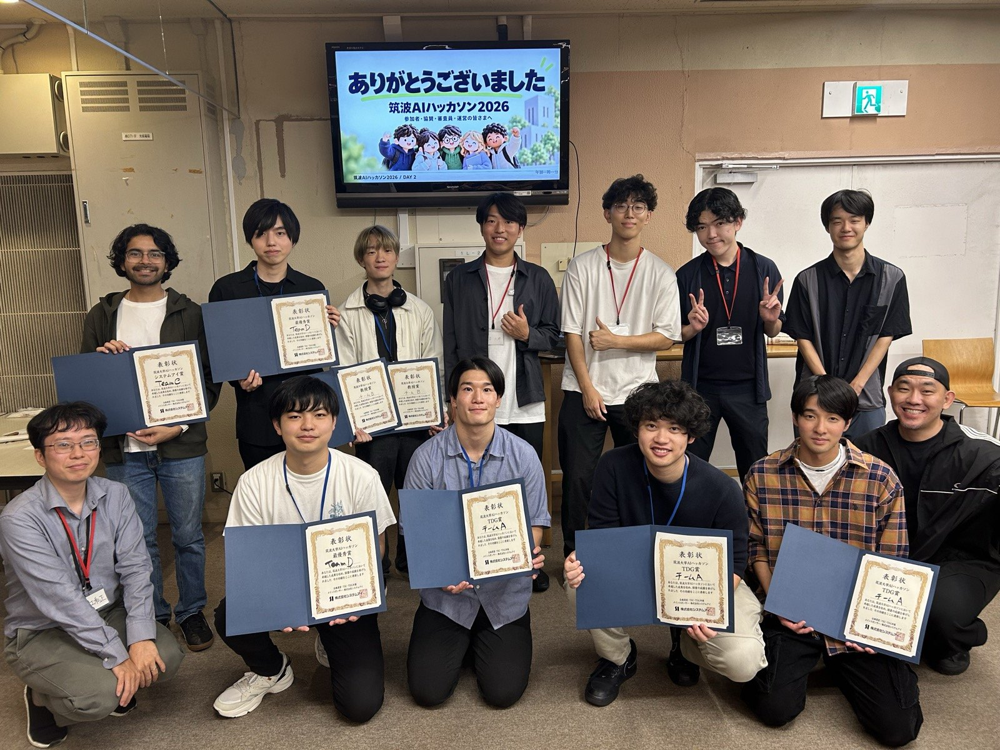

TAIKI MISAWA
Activities
取り組んだこと、出会った人たち。
Community / Organizing
2026.09.20 — 09.27
企画・運営
筑波AIハッカソン2026
初めて、自分たちでハッカソンを開催しました。
お題は「筑波大学を、ちょっと便利にしてください。」。4チームがAIを使い、8日間でそれぞれの作品を形にしました。私は企画・運営を担当し、先生や企業、学生の協力とともに開催を終えました。
次は、どんな形で開催するか。今回の経験をもとに、参加する人も運営する人も楽しめる場を考えています。
構想サイトには、これから実現したい開催の形をまとめています。

Selected Work
活動と、考えていること
地域での活動、留学の経験、これから試したいアイデア。
Current Lanes